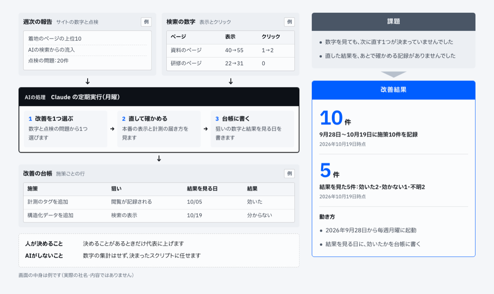
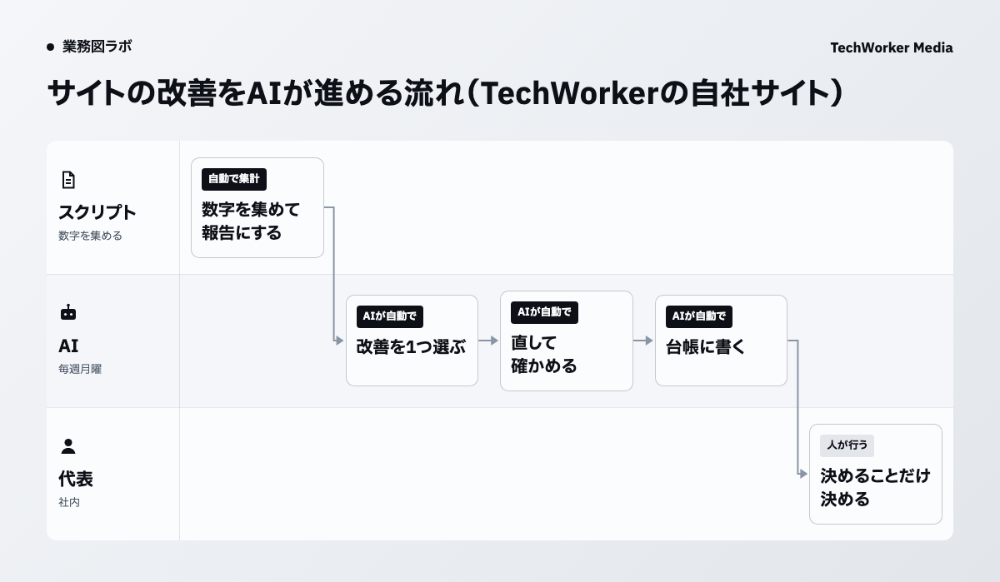

当社では、毎週月曜にAIがサイトの改善を1つ進めています
TechWorkerでは2026年9月28日から、毎週月曜にAIが自社サイトの改善を1つ選んで直しています。9月28日から10月19日までに、施策10件を台帳に記録しました。

AIが読むのは、週次の報告と検索の数字です。週次の報告には、着地のページの上位10、AIの検索からの流入、点検の問題が入ります。届くのは、施策ごとの行がある改善の台帳です。
仕組みの全体は事例のページ「サイトの数字を見て、AIが毎週1つ直します」にまとめています。
数字を見ても、次に直す1つが決まっていませんでした
自社サイトの閲覧・問い合わせ・検索の数字は、見る場所がばらばらでした。数字を見ても、次に直す1つが決まっていませんでした。
直した結果を、あとで確かめる記録もありませんでした。
数字を集める所と、直す所を分けます
数字を集める所はスクリプト、改善を選んで直す所はAIに分けて、毎週回しています。

毎週月曜、スクリプトが数字を集めて報告にします。AIは数字の集計をせず、決まったスクリプトに任せます。
AIは報告を読み、数字と点検の問題から改善を1つ選びます。直したあとは、本番の表示と計測の届き方を見ます。
最後に、狙いの数字と結果を見る日を台帳に書きます。
決めることがあるときだけ、代表に上げます
代表に上げるのは、決めることがあるときだけです。
AIがするのは、1つ選んで直すまでです。大きな判断は代表がします。
結果を見た5件のうち、効いたのは2件でした
結果を見る日が来た施策は、効いたかどうかを台帳に書き足します。結果を見た5件は効いた2件・効かない1件・不明2件でした。
図の例の台帳では、計測のタグを足した施策を「効いた」、構造化データを足した施策を「分からない」と書いています。
自社で試すときは、結果を見る日を直す日に決めます
自社で同じ形を試すなら、直す日に、狙いの数字と結果を見る日を一緒に決めます。ここからは本記事の提案です。
結果を見る日が台帳にあれば、効いたかどうかを確かめ忘れません。
数字を集める所は決まった手順のスクリプトに任せます。AIには集めた数字を読んで1つ選ぶところを任せます。
業務図で、決まった手順とAIに任せる判断を分けます
サイトの改善のように、集計と判断が混ざる仕事は、決まった手順とAIに任せる判断を分けると、任せる範囲がはっきりします。業務図はその分け方を1枚で確かめる道具です。
CompanyMap AIは聞き取り・資料・業務の記録の3つから、AIが部署の業務図を作るサービスです。2週間の無料検証から始められます。
出典と、本記事で提案した範囲
- TechWorker社内の定期実行の設定と、改善の台帳（2026年10月19日時点）。公開資料ではありません。
- TechWorker「AIエージェントの事例」の事例のページ（2026年10月20日公開）。
流れ、施策の件数、結果を見た5件の内訳は当社の設定と台帳にある事実です。結果を見る日を直す日に決めることは、本記事の提案です。問い合わせの件数の変化は本記事では扱いません。